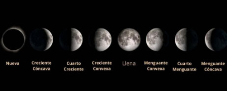

A finales del siglo xix se descubrió que, al descomponer la luz del Sol, se podían observar multitud de líneas de espectro (regiones en las que había poca o ninguna luz). Experimentos con gases calientes mo straron que las mismas líneas podían ser observadas en el espectro de los gases, líneas específicas correspondientes a diferentes elementos químicos. De esta manera se demostró que los elementos químicos en el Sol (mayoritariamente hidrógeno) podían encontrarse igualmente en la Tierra. De hecho, el helio fue descubierto primero en el espectro del Sol y solo más tarde se encontró en la Tierra, de ahí su nombre.
Se descubrió que las estrellas eran objetos muy lejanos y con el espectroscopio se demostró que eran similares al Sol, pero con una amplia gama de temperaturas, masas y tamaños. La existencia de la Vía Láctea como un grupo separado de estrellas no se demostró sino hasta el siglo xx, junto con la existencia de galaxias externas y, poco después, la expansión del universo, observada en el efecto del corrimiento al rojo.
Los avances en tecnología óptica y de detección han revolucionado la astronomía moderna. Telescopios terrestres como el Very Large Telescope (VLT) en Chile utilizan sistemas de óptica adaptativa para corregir distorsiones atmosféricas, permitiendo imágenes más nítidas y detalladas del espacio profundo.
Por otro lado, observatorios espaciales como el Telescopio Espacial Hubble y el Telescopio Espacial James Webb (lanzado en 2021) han proporcionado imágenes de alta resolución sin la interferencia atmosférica, revelando detalles que son difíciles de captar desde la Tierra.
Misiones como las de la NASA y la ESA han proporcionado información detallada sobre planetas, lunas y asteroides. Ejemplos incluyen las misiones a Marte (como el rover Perseverance), las misiones a asteroides (como la misión OSIRIS-REx) y las misiones a los planetas exteriores (como la sonda Juno en Júpiter y la sonda Cassini en Saturno).
La búsqueda y caracterización de planetas fuera de nuestro sistema solar ha sido una prioridad. Se han descubierto miles de exoplanetas utilizando técnicas como el método de tránsito (detectando el oscurecimiento periódico de una estrella cuando un planeta pasa por delante de ella) y la velocidad radial (midiendo pequeñas oscilaciones en la velocidad de una estrella debido a la gravedad de los planetas que la orbitan).
Mediciones precisas del fondo cósmico de microondas y la expansión del universo han proporcionado información crucial sobre la historia y la estructura del universo.
La detección de ondas gravitacionales combinada con observaciones en otras longitudes de onda ha abierto una nueva era en la comprensión de eventos astrofísicos cataclísmicos.
Misiones espaciales recientes han proporcionado datos detallados sobre planetas y lunas dentro de nuestro sistema solar, revelando información crucial sobre su formación y evolución.
la astronomía moderna también ha descubierto una variedad de objetos exóticos como los cuásares, púlsares, radiogalaxias, agujeros negros, estrellas de neutrones, y ha utilizado estas observaciones para desarrollar teorías físicas que describen estos objetos. La cosmología hizo grandes avances durante el siglo xx, con el modelo del Big Bang fuertemente apoyado por la evidencia proporcionada por la astronomía y la física, como la radiación de fondo de microondas, la ley de Hubble y la abundancia cosmológica de los elementos químicos.